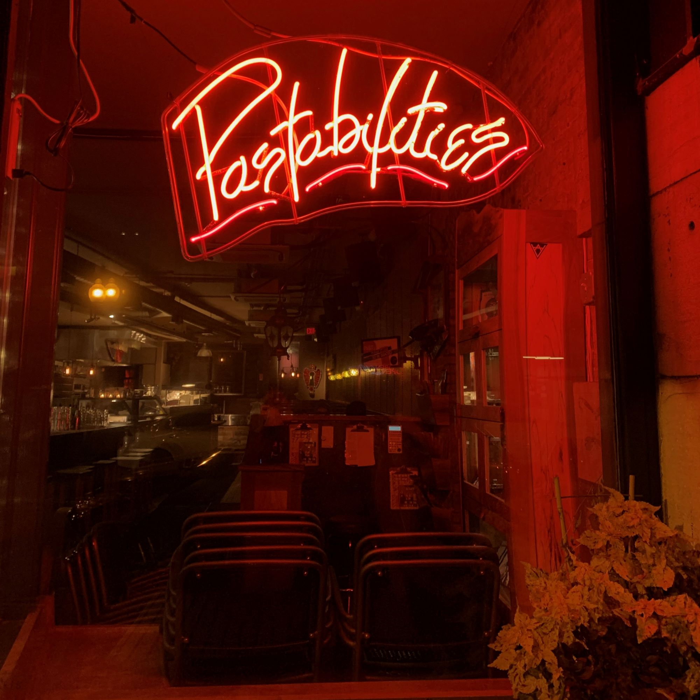
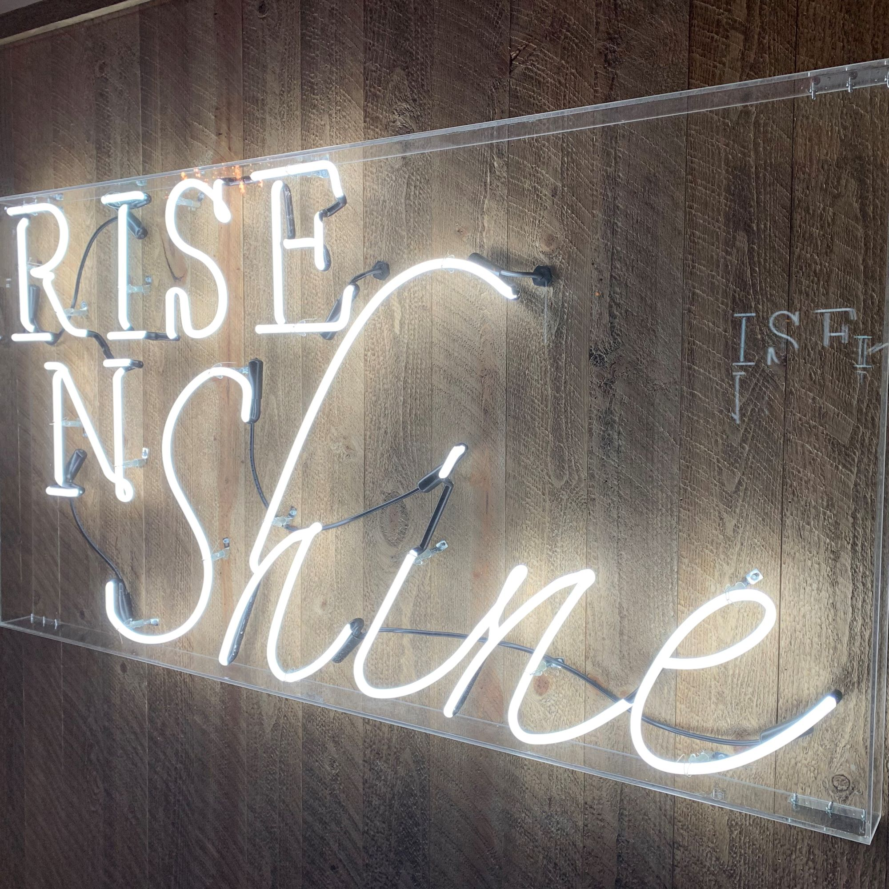
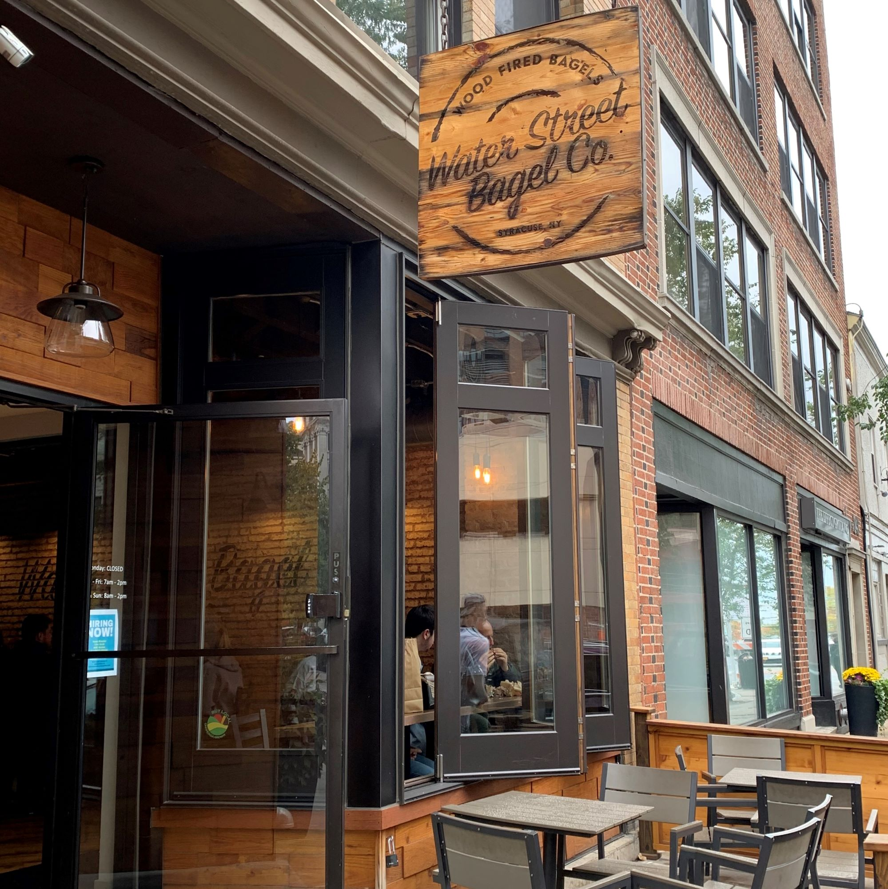
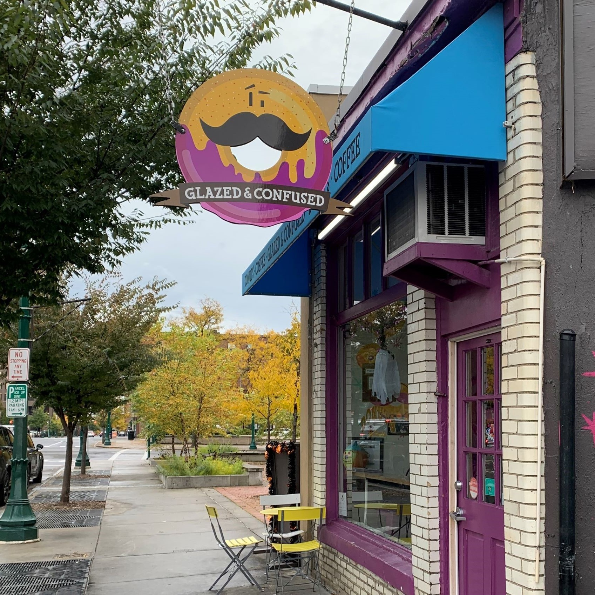
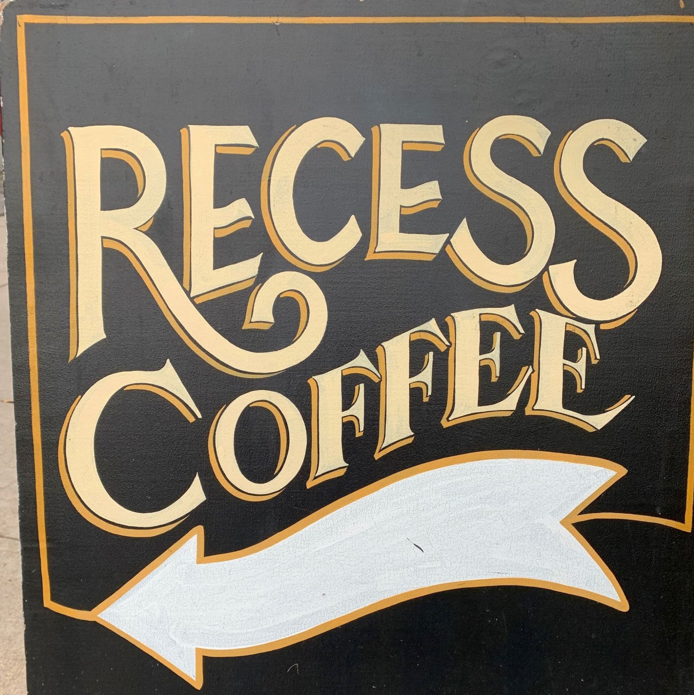

Pastabilities
RisenShine Diner
Waterstreet Bagel Co.
Glazed & Confused
Recess Coffee
Pastabilities
Pastabilities is an Italian restaurant located in Armory Square.
A favorite of Syracuse University students, their food is guaranteed to satisfy any pasta cravings you may be having.
The wait can get long, so get there early or make a reservation!
Click here to view their menu
RisenShine Diner
If you're looking for some great breakfast food at any time of the day, you have to check out RisenShine Diner.
RisenShine Diner has everything from classic breakfast plates to giant freakshakes.
They just opened their new location on Westcott Street, which is conveniently close to campus!
Click here to view their full menu!
Waterstreet Bagel Co.
If you're ever in the mood for a great bagel, but you can't afford the four hour Uber to the city, Waterstreet Bagel Co. is the place to go.
Waterstreet Bagel Co. makes amazing breakfast and lunch sandwiches on their bagels, or you can stick with plain bagels and cream cheese.
Click here to view their bagels and sandwiches.
Glazed & Confused
Glazed & Confused is a cute little donut shop down on Clinton Street
They make exciting tiny donuts that are perfectly Instagrammable!
Click here to view all of their donut options!
Recess Coffee
Recess Coffee is a great coffee shop located off of Westcott Street.
They offer a great selection of tea, hot chocolates, and coffees, as well as pastries and sandwiches.
This is a great place to go to grab a quick snack or settle down to get your work done!
Click here to explore their menu.